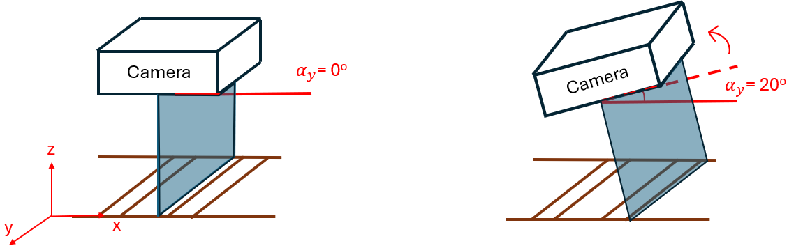

Effects of Train Dynamics on Line Scan Cameras
Table of Contents
- Context
- Assumptions
- Camera Configuration
- Train Configuration
- Static Error
- Effect of Vertical Movement
- Effect of Lateral Movement
- Effect of Pitch of Train
- Effect of Yaw of Train
- Effect of Roll of Train
Context
- Line Scan cameras are attached to the bottom of a train to capture images of the moving rail underneath.
- The dynamics of the rolling stock may impact the quality of the captured images.
- This document outlines the effect of the dynamics of the rollingstock on the quality of the images.
Assumptions
This document assumes that the camera is mounted at the nominal position with zero yaw, roll or pitch angle when not subjected to any train dynamics, as shown in the image to the left below.
Mounting the camera at any non-zero yaw, roll and/or pitch angle may cause an amplified reaction to train dynamics.
Camera Configuration
These values are the specifications of the Teledyne Linea E Monochrome 2k Linescan Camera. Note that changing these values will change the values in the rest of the document.
Longitudinal Field of View
The longitudinal field of view is mm
Lateral Field of View
The lateral field of view is mm
Train Configuration
km/hThe required acquisition rate is Hz
Static Error
Error Due To Resolution
Because the sensor pixels in the Teledyne Linea E Monochrome 2k Linescan Camera are square, 1 pixel covers mm
Effect of Vertical Movement
The effect is negligible as the error is smaller than the error due to resolution.
The captured feature size will be % or mm than the actual feature size.
The acquisition rate will be % than the actual required acquisition rate of Hz.
This means that for the duration of the vertical displacement the feature will appear % .
Effect of Lateral Movement
Lateral movement in the train would cause a lateral shift in each row of pixels in the captured image. There is an equal relationship between the lateral movement of the train and the shift in the row of pixels.
Refer to lateralEffectSimulator.py for a simulation of lateral effects on an image.
Effect of Pitch of Train
mm of track will be .
Working distance increases by mm, thus the captured feature size will be % or mm smaller than the actual feature size.
Effect of Yaw of Train
Hz
mm
mm along the longitudinal direction of the track will be skipped and repeated at mm horizontally to the right and left of the position of the camera.
The skew will constant within the capture of the image.
Effect of Roll of Train
mm of the of the track will be missing from the image, and the same amount will be further captured on the of the track.
The working distance will be slightly varied but the effects will be negligible.